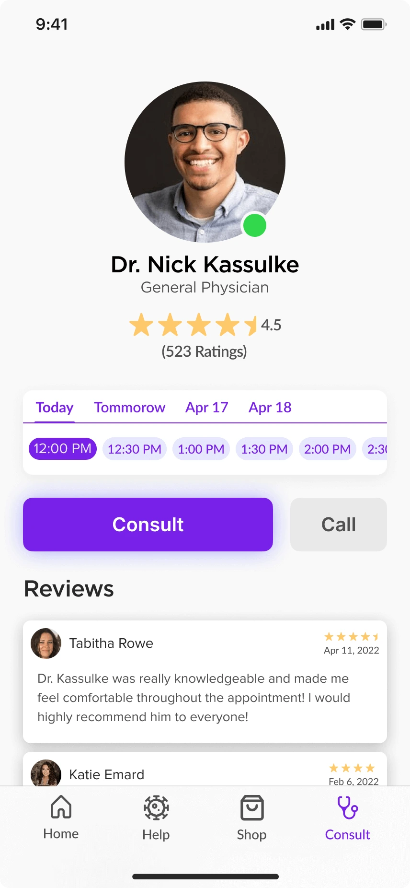
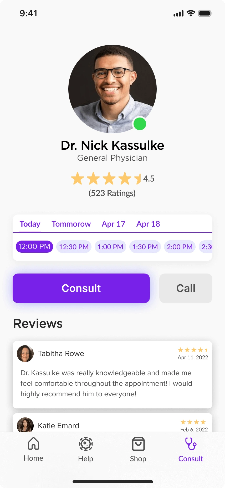
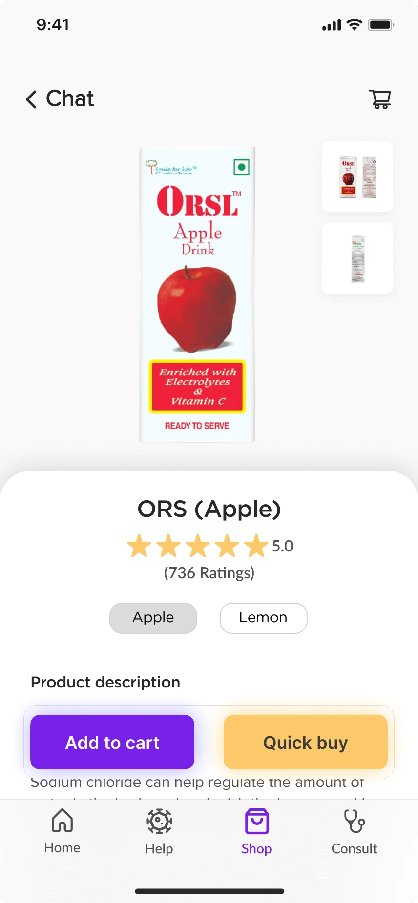
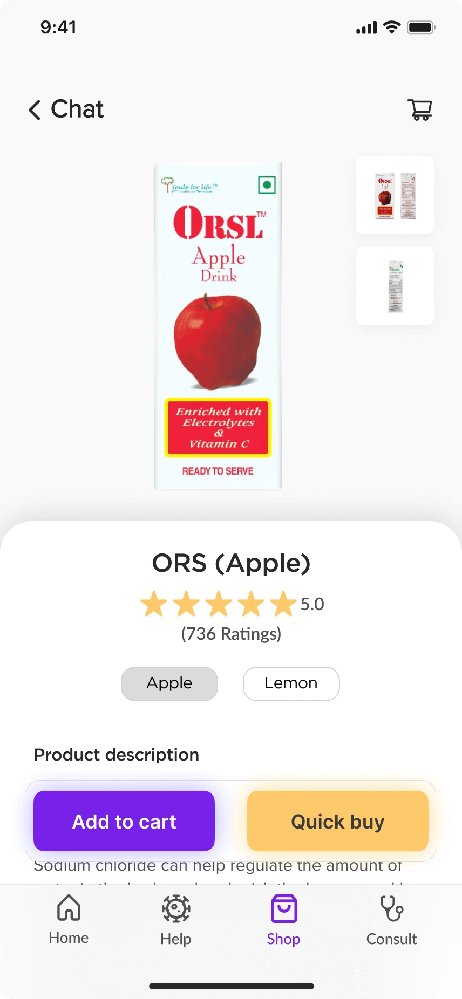

Covihelp
( overview )
Covihelp strives to bridge the gap and streamline the process of acquiring medical aid. Its user-friendly platform seamlessly connects individuals with the necessary resources.
( Duration )
2 weeks
( Category )
UI/UX CASE STUDY

( problem statement)
The coronavirus crisis has brought India's public health system to its downfall with hospitals running out of beds and people desperately seeking medical help for their loved ones.
( Understanding user needs )
1. ICU's
2. Availability of beds/ wards
3. Reliable information
4. Oxygen tanks
5. Local needs
( User research )
Discover- Determine what is relevant for the users
Explore- See how to address all user needs
Test- Evaluating my design choices
Listen- Put issues in perspective, uncover any new problems
and spot trends
( creating a questionnaire )
These are some of the questions I asked:
When you needed the resources how do you wish
things were? What are the things you were glad that they existed?
What were the difficulties you faced?
Were you asked for resources?
Did you ask for information and were they reliable?
( Finding Opportunity in the Market )
My goal is to create a platform that acts as a middleman between the user
and medical authorities. Using the HMW (How Might We) tool, I was able to
get some clarity.
HMW connect local health care centers with NGOs and donors for funding
or resources. (Basically help them enhance their capacity)
HMW create a detailed mapping of beds (ward/HDU/ICU) for patients
at various facilities.
HMW create a database of all medical and paramedical staff who could contribute
HMW allocate resources as per the spectrum of illness(mild, moderate, severe) and
medical history.


 


 
